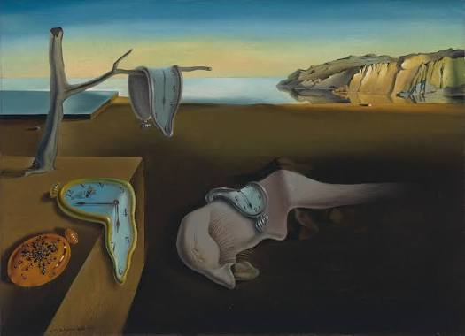

Меня поражает в Дали то, как аккуратно он выписывает каждую деталь. Даже если сюжет картины полностью сюрреалистичный, всё нарисовано настолько чётко, что кажется реальным. Он как будто фотографировал свои сны. Больше всего мне нравится "Постоянство памяти" — эти мягкие часы выглядят очень необычно.
